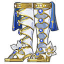

추천 광추
해 질 무렵 시작되는 춤
피격 확률 대폭 증가 · 치피 +36%
효과 자세히
필살기 → 추가 공격 피해 +36% 2턴, 최대 2스택.
이와 같이 타오르는 여명
기초 속도 +12 · 방어력 무시 18%
효과 자세히
필살기 사용 후 자신의 다음 턴 시작 전까지 피해 +60%.
대체할 수 없는 것
공격력 +24% · 피격·처치 시 회복
효과 자세히
피격·처치 → 공격력 8%만큼 HP 회복 및 피해 +24%. 다음 턴 종료까지.
어떤 에이언즈의 몰락
공격마다 공격력 +16%
효과 자세히
4스택 최대 +64%. 자신이 약점 격파 시 피해 +24% 2턴.
닿을 수 없는 저편
치확·HP 최대치 +18%
효과 자세히
피격·HP 소모 → 다음 공격 피해 +24%.
추천 유물
망국을 애도하는 시인 4 · 질주하는 늑대의 도람 왕조 2
- 머리
 주옵션HP부옵션치명타 확률 · 치명타 피해 · 공격력% · HP% · 방어력%
주옵션HP부옵션치명타 확률 · 치명타 피해 · 공격력% · HP% · 방어력% - 손
 주옵션공격력부옵션치명타 확률 · 치명타 피해 · 공격력% · HP% · 방어력%
주옵션공격력부옵션치명타 확률 · 치명타 피해 · 공격력% · HP% · 방어력% - 몸통
 주옵션치명타 확률 / 치명타 피해부옵션치명타 확률 (주옵션 제외) · 치명타 피해 (주옵션 제외) · 공격력% · HP% · 방어력%
주옵션치명타 확률 / 치명타 피해부옵션치명타 확률 (주옵션 제외) · 치명타 피해 (주옵션 제외) · 공격력% · HP% · 방어력% - 다리

주옵션공격력%부옵션치명타 확률 · 치명타 피해 · HP% · 방어력% - 구체
 주옵션물리 속성 피해 / 공격력%부옵션치명타 확률 · 치명타 피해 · 공격력% (주옵션 제외) · HP% · 방어력%
주옵션물리 속성 피해 / 공격력%부옵션치명타 확률 · 치명타 피해 · 공격력% (주옵션 제외) · HP% · 방어력% - 매듭
 주옵션공격력%부옵션치명타 확률 · 치명타 피해 · HP% · 방어력%
주옵션공격력%부옵션치명타 확률 · 치명타 피해 · HP% · 방어력%
이 조합을 추천하는 이유
시인 착용 후 전투 전 속도 95 미만 → 치확 +32%. 도람 추가 공격 5스택 → 치피 +25%.
스트리트 격투왕 4 · 회전을 멈춘 살소토 2
- 머리
 주옵션HP부옵션치명타 확률 · 치명타 피해 · 공격력% · HP% · 방어력%
주옵션HP부옵션치명타 확률 · 치명타 피해 · 공격력% · HP% · 방어력% - 손 주옵션공격력부옵션치명타 확률 · 치명타 피해 · 공격력% · HP% · 방어력%
- 몸통
 주옵션치명타 확률 / 치명타 피해부옵션치명타 확률 (주옵션 제외) · 치명타 피해 (주옵션 제외) · 공격력% · HP% · 방어력%
주옵션치명타 확률 / 치명타 피해부옵션치명타 확률 (주옵션 제외) · 치명타 피해 (주옵션 제외) · 공격력% · HP% · 방어력% - 다리 주옵션공격력%부옵션치명타 확률 · 치명타 피해 · HP% · 방어력%
- 구체
 주옵션물리 속성 피해 / 공격력%부옵션치명타 확률 · 치명타 피해 · 공격력% (주옵션 제외) · HP% · 방어력%
주옵션물리 속성 피해 / 공격력%부옵션치명타 확률 · 치명타 피해 · 공격력% (주옵션 제외) · HP% · 방어력% - 매듭
 주옵션공격력%부옵션치명타 확률 · 치명타 피해 · HP% · 방어력%
주옵션공격력%부옵션치명타 확률 · 치명타 피해 · HP% · 방어력%
이 조합을 추천하는 이유
격투왕 공격·피격으로 공격력 최대 +25%. 살소토 치확 50% → 추가 공격·필살기 강화.
재와 뼈마저 불사르는 대공 4 · 질주하는 늑대의 도람 왕조 2
- 머리
 주옵션HP부옵션치명타 확률 · 치명타 피해 · 공격력% · HP% · 방어력%
주옵션HP부옵션치명타 확률 · 치명타 피해 · 공격력% · HP% · 방어력% - 손 주옵션공격력부옵션치명타 확률 · 치명타 피해 · 공격력% · HP% · 방어력%
- 몸통
 주옵션치명타 확률 / 치명타 피해부옵션치명타 확률 (주옵션 제외) · 치명타 피해 (주옵션 제외) · 공격력% · HP% · 방어력%
주옵션치명타 확률 / 치명타 피해부옵션치명타 확률 (주옵션 제외) · 치명타 피해 (주옵션 제외) · 공격력% · HP% · 방어력% - 다리
 주옵션공격력%부옵션치명타 확률 · 치명타 피해 · HP% · 방어력%
주옵션공격력%부옵션치명타 확률 · 치명타 피해 · HP% · 방어력% - 구체
주옵션물리 속성 피해 / 공격력%부옵션치명타 확률 · 치명타 피해 · 공격력% (주옵션 제외) · HP% · 방어력%
- 매듭
주옵션에너지 회복효율부옵션치명타 확률 · 치명타 피해 · 공격력% · HP% · 방어력%
이 조합을 추천하는 이유
대공으로 추가 공격을 강화하고, 도람 5중첩을 쌓아 추가 공격 피해와 치명타 피해를 보강합니다.
스트리트 격투왕 4 · 회전을 멈춘 살소토 2
- 머리
주옵션HP부옵션속도 · 치명타 확률 · 치명타 피해 · 공격력%
- 손 주옵션공격력부옵션속도 · 치명타 확률 · 치명타 피해 · 공격력%
- 몸통
주옵션치명타 확률 / 치명타 피해부옵션속도 · 치명타 확률 (주옵션 제외) · 치명타 피해 (주옵션 제외) · 공격력%
- 다리 주옵션속도부옵션치명타 확률 · 치명타 피해 · 공격력%
- 구체
주옵션물리 속성 피해 / 공격력%부옵션속도 · 치명타 확률 · 치명타 피해 · 공격력% (주옵션 제외)
- 매듭
주옵션공격력% / 에너지 회복효율부옵션속도 · 치명타 확률 · 치명타 피해 · 공격력% (주옵션 제외)
이 조합을 추천하는 이유
1돌로 전투 스킬 사용 후에도 반격 표식이 제거되지 않습니다. 적의 반격 표식을 유지하며 능동적으로 행동하는 구성입니다.
이 정도면 잘 키웠다
선택한 세팅 기준 · —는 확인된 수치 없음
- 속도 전투 전
전투 전 낮은 속도를 유지해 시인 치명타를 확보합니다.
| 스탯 | 추천 스탯 | 준종결 | 종결 |
|---|---|---|---|
| 공격력 | 3400[1]물리 피해 구체. | — | — |
| 속도 | 95 미만[2]시인 전투 전 조건. | — | — |
| 치명타 확률 | 68%[3]세팅 시트의 68% 줄과 시인 설명이 서로 다른 각주 번호를 참조합니다. 시인 +32%를 받으면 100%에 도달합니다. | — | — |
| 치명타 피해 | 120% | — | — |
세팅 기준·출처
공개 가이드에서 이 세팅의 준종결 또는 종결 수치를 확인하지 못했습니다.
공격과 피격으로 격투왕 공격력 효과를 쌓습니다.
| 스탯 | 추천 스탯 | 준종결 | 종결 |
|---|---|---|---|
| 공격력 | 3400[1]물리 피해 구체. | — | — |
| 속도 | 90 또는 100[2]Prydwen은 기본 90, 길어지는 전투 100을 제시. | — | — |
| 치명타 확률 | 80% | — | — |
| 치명타 피해 | 120% | — | — |
세팅 기준·출처
공개 가이드에서 이 세팅의 준종결 또는 종결 수치를 확인하지 못했습니다.
반격을 자주 발동해 추가 공격 피해를 얻습니다.
| 스탯 | 추천 스탯 | 준종결 | 종결 |
|---|---|---|---|
| 공격력 | 3400[1]물리 피해 구체. | — | — |
| 속도 | 90 또는 100 | — | — |
| 치명타 확률 | 80% | — | — |
| 치명타 피해 | 120% | — | — |
세팅 기준·출처
공개 가이드에서 이 세팅의 준종결 또는 종결 수치를 확인하지 못했습니다.
스탯 조건과 각주
- 공격력 · 추천 스탯 물리 피해 구체. ↑
- 1돌
- 혼돈 첫 라운드 2행동
1돌에서 반격 표식이 남아 전투 스킬을 더 자주 사용합니다.
| 스탯 | 추천 스탯 | 준종결 | 종결 |
|---|---|---|---|
| 속도 | 속도 신발 | 133.4+[1]자체 계산 · 속도 변화·행동 당김 없이 혼돈의 기억 첫 라운드(150 행동값) 안에 2회 행동. 2 × 10000 ÷ 150보다 높아야 합니다.자체 계산 | — |
세팅 기준·출처
혼돈 첫 라운드에 전투 스킬 두 번을 노리는 세팅입니다. 전투 스킬 중심 세팅에는 속도 신발을 장착합니다. 이 세팅의 별도 종결 수치는 확인하지 못했습니다.
스탯 조건과 각주
- 속도 · 준종결 자체 계산 · 속도 변화·행동 당김 없이 혼돈의 기억 첫 라운드(150 행동값) 안에 2회 행동. 2 × 10000 ÷ 150보다 높아야 합니다. ↑
성혼과 추천 돌파
1돌 반격 표식 유지 · 6돌 동료 피격 반격과 강화 반격 횟수 증가.
1전투 스킬 후 반격 표식 유지추천
같은 표식 적에게 강화 배율의 전투 스킬을 반복할 수 있음.
2필살기 → 공격력 +30%
2턴.
3전투 스킬 +2 · 일반 공격 +1
스킬·일반 공격 레벨 상한 각각 15·10.
4피격 후 받는 피해 −30%
클라라의 다음 턴까지.
5필살기·특성 +2
필살기·특성 레벨 상한 각각 15.
6동료 피격에 반격 · 강화 반격 +1회추천
동료 피격 때 고정 확률 50%로 반격·표식. 필살기 강화 반격 횟수 증가.
추천 파티


기본 운영과 행적
적 턴을 활용해 스바로그 반격
필살기로 피격 확률과 강화 반격 확보 → 적 공격을 받아 반격 표식 부여 → 스킬로 표식 적 타격.
- 적 행동을 지나치게 지연시키면 반격 기회 감소. 링스 전투 스킬을 클라라에 써 피격 확률 보강.
행적 육성 순서
특성 → 전투 스킬·필살기 → 일반 공격
아하 속도 계산기 →